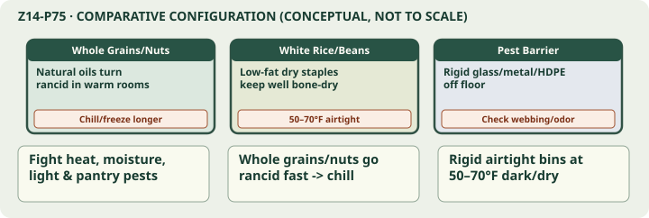

Z14-P75 · Food production and preservation · New manuscript
Protect dry grains, legumes, flours, and dehydrated goods from heat, moisture, and pests
Keep dry pantry staples wholesome and bug-free without relying on exaggerated shelf-life marketing claims.
When it applies · Storing rice, oats, dry beans, lentils, pasta, flour, sugar, salt, and home-dehydrated vegetables in household pantries.
Equipment · Airtight food-grade glass jars, heavy HDPE buckets with gasket lids, or sealed Mylar pouches, cool dark shelves (50–70°F), and inspection log.

Actions
- Control the four enemies of dry food storage—heat, moisture, light, and pests—by sealing dry staples inside rigid airtight food-grade glass, metal, or thick HDPE containers kept on cool (50–70°F), dark, dry shelves raised off floors.[P18]
- Distinguish storage stability honestly: whole grains, brown rice, whole-wheat flour, nuts, seeds, and cooking oils contain natural fats that turn rancid within months at warm room temperature (refrigerate or freeze whole flours/nuts if storing longer!), whereas white rice, rolled oats, dry lentils/beans, salt, and honey keep substantially longer when cool and bone-dry.[P18]
- Inspect dry goods periodically—freeze newly purchased dry flour/grains cleanly at 0°F for 3 to 4 days if desired to kill hidden pantry-moth/weevil eggs before moving into sealed storage jars.[P18, P12]
Failure recognition · Storing 25-pound paper sacks of whole-wheat flour and brown rice on a warm 80°F attic floor where pantry moths and rancid oils ruin everything in three months.[P18]
Verify · Confirm cool dark 50–70°F location, rigid airtight food-grade containers, whole-grain/nut fat limits respected, and zero moisture clumping.[P18]
Stop or change course · Paint-like/cardboard rancid odor, visible silk webbing, beetles, or damp hard clumping requires discarding affected dry goods and wiping shelves clean.[P18]
Evidence and editorial notes
- P12 · NCHFP · Freezing Foods Safely (current web edition)
- Section: Freezing Foods > Blanching, Packaging, 0°F Storage, and Thawing · Conditions: Household freezers maintaining 0°F (-18°C) or lower
Support: Blanch most vegetables per tested times to inactivate quality-degrading enzymes, chill promptly, package in moisture-vapor-resistant freezer wrap/containers leaving liquid expansion headspace, freeze at 0°F or below, and thaw safely in the refrigerator (never on the counter).
Limitations: Freezing halts microbial growth but does not kill all pathogens; thawed foods require prompt safe cooking/handling. · Conflicting evidence: None; connects freezing quality control with Z15 outage loss decisions.
Editorial note: Core freezing and safe thawing evidence in Z14. · Specialist reviewer: Food safety and Extension preservation
Primary source · checked 2026-11-24 - P18 · University of Minnesota Extension · Harvesting and Storing Home Garden Vegetables (current web edition)
- Section: Dry Grain, Legume, and Pantry Pest/Moisture Protection · Conditions: Cool dry household pantries storing dry beans, grains, flour, and dehydrated produce
Support: Store dry staples and dehydrated foods in cool (ideally 50–70°F), dark, dry locations inside airtight food-grade containers to prevent moisture absorption, rancidity, rodents, and pantry insects; inspect periodically for clumping, webbing, or off-odors.
Limitations: Heat, humidity, and light degrade nutrients and accelerate fat rancidity in whole grains and nuts far faster than refined staples. · Conflicting evidence: None; avoids fabricated 25-year shelf-life promises.
Editorial note: Grounds dry-goods storage, pest exclusion, and spoilage inspection. · Specialist reviewer: Food storage and Extension specialist
Primary source · checked 2026-11-24
Source lineage · UMN Extension Food Storage and Ready.gov; new manuscript · Classification · New manuscript.